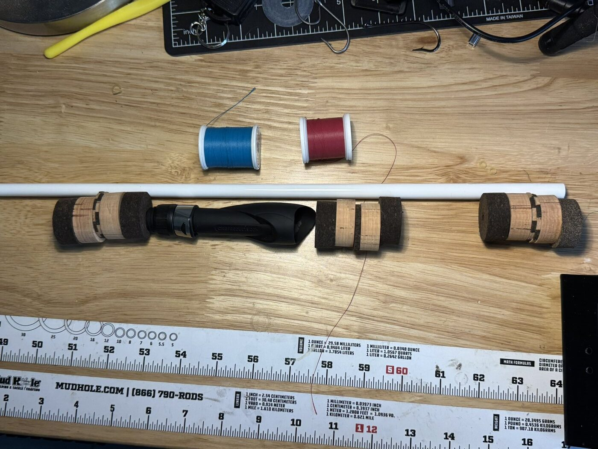
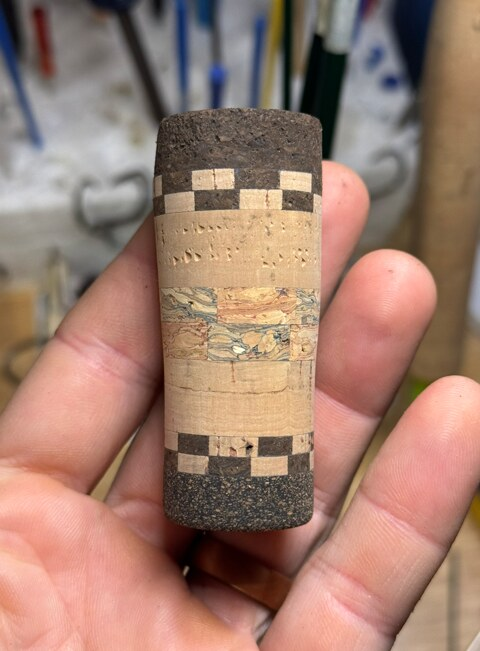
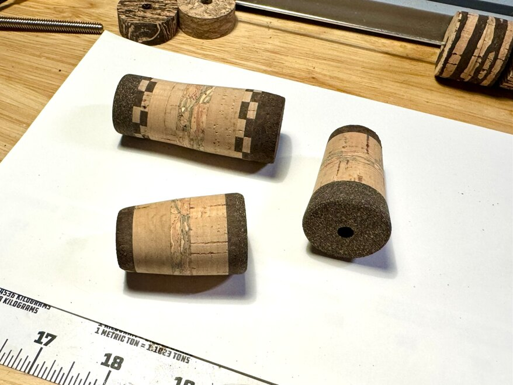
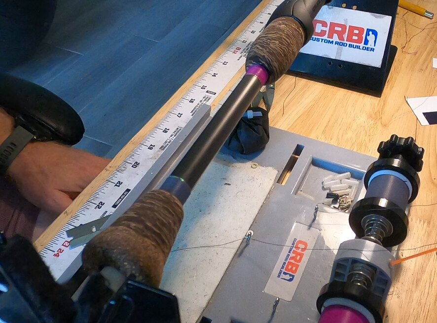
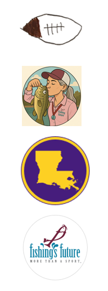
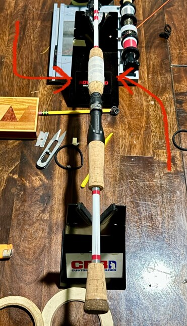
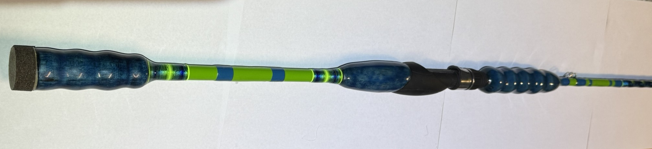

01 / PLAN THE BUILD
The story connects to each component.
Every build begins with the person and the story the rod should carry, with what they fish for, where they fish, and how they like to fish shaping its performance. Whether you know the exact specifications or would rather describe what you need the rod to do, those details guide every technical choice—from blank, power, and action to guides and handle layout.

02 / THE GRIP
Shaped by hand for the rod—and the angler.
Grip materials are selected, assembled, and shaped to create the right balance, comfort, and appearance for the finished rod.


03 / SEE THE CHOICE
Some decisions are harder than others.
Sometimes you need to see it on the rod before making a final decision. This client was set on fuscia with gold trim, until I showed him gray with galaxy trim. After years of rod making, I understand how to weave stories with aesthetics.

04 / TEST THE LAYOUT & CASTABILITY
Every factory rod blank is a little different.
Guide spacing and alignment are checked under load before anything becomes permanent. The goal is a smooth line path, proper stress distribution, and a rod that delivers maximum casting distance with strength and durability for years to come.
05 / MAKE IT PART OF THE ROD


If it carries meaning, it can become part of the build.
I make a lot of custom decals. Whether your design or mine, they add a unique personal touch. A sample of handwriting or a signature is very popular.
We are not limited to only colors and decals. A piece of a pole vault can become part of a grip. (Picture to left) A dog-tag chain can become a decorative wrap. A loved one’s ashes can be respectfully sealed into the rod. If an object, material, or symbol carries meaning, I will look for a way to make it part of the build.
Customization also means fitting the angler. The extended split-grip layout shown below was built for a client who stands 6 feet 8 inches tall, with proportions designed specifically for his reach and comfort.

HAVE SOMETHING IN MIND?
Let’s find a way to make it part of the rod.
Tell me about the angler, how the rod will be fished, and what you want it to carry onto the water.
Start a Build